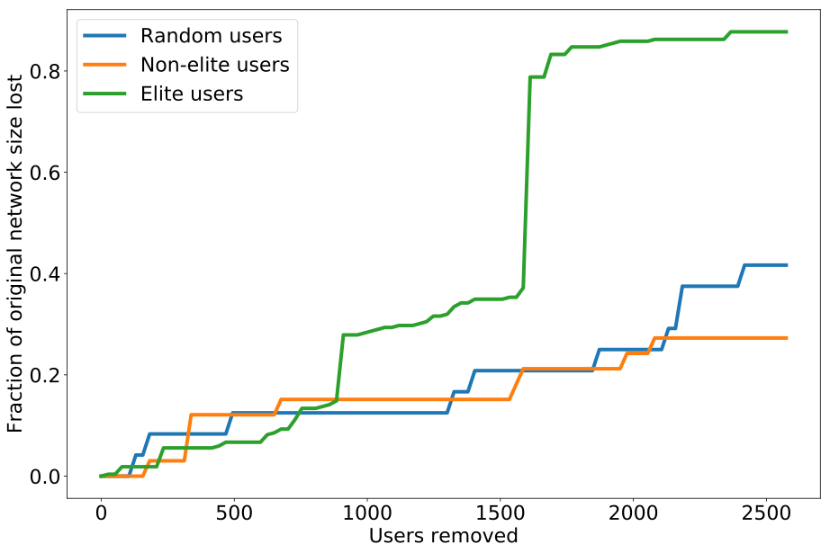
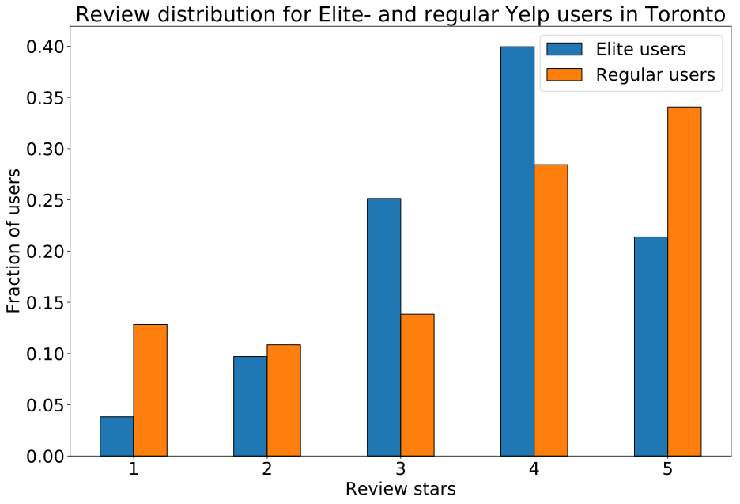

Analysis of Yelp 'Elite' reviewers in Toronto
For all the source material used, check out the GitHub respository
For the detailed analysis and Python 3 source code, check out the
explainer-notebook

Introduction
Yelp is a company founded in 2004 that allows users of its website, Yelp.com, or its mobile app to review and rate businesses ranging from restaurants to home services. It has become extremely popular, with over 100 million unique users visiting its services per month during Q3 2018 and generating more than 171 million reviews. Businesses have profiles and can respond to reviews but cannot influence nor change the content of the reviews. Yelp recommends the reviews it deems best and most reliable and has become a strong influence on the success of restaurants [3].
Yelp’s goal is ‘to connect people with great local businesses.’ To better achieve this, they established the Yelp Elite Squad (YES), composed of the most avid of Yelp’s users. In order to join, an individual must be nominated and then selected, on the basis of a set of nondescript and subjective criteria. They must then maintain this status, as it only is guaranteed for a year [5].
Data Story and Aims of the Analysis
The purpose of our project is to supplement Yelp’s subjective description of the of an elite user with quantitative analysis. Yelp states that elite users are “people who are active in the Yelp community and role models” and that selection is based on “well-written reviews, high quality tips, a detailed personal profile, an active voting and complimenting record, and a history of playing well with others” [4]. There are not many further descriptions of what it takes to be selected as an elite user, and no specific quantitative thresholds or measures to meet.
The first aspect of our analysis attempts to quantify the description of elite users being “active in the Yelp community” and “playing well with others” [4]. To do so, we examine the role of elite users in the friendship network of Yelp. Yelp users can “friend” other users on the site and these connections can be modeled in a graph. We hypothesize that elite users will display a greater number of connections and a greater degree of centrality and importance in the graph, characteristics that reflect Yelp’s subjective description.
The second aspect of our analysis attempts to quantify aspects of the description that elite users have “well-written reviews” [4]. Although this is quite broad, we attempt to quantify some aspects of it by examining the sentiment expressed in the reviews as well as how the use of language differs. We hypothesize that elite users will use more descriptive and sophisticated language as well as show more measured emotion in their words.
For this project, the focus was on restaurants in Toronto as Toronto is a big city with more than a sufficient amount of data to perform a serious analysis, but small enough for various graph algorithms to be carried out. The reviews and users considered in this project were those pertaining to a restaurant in Toronto.
The Dataset Used
The dataset is a subset of the YELP dataset challenge 2018 dataset and contains YELP review data from the period 2004 to 2018, where the majority of the reviews are made in North America.
The datasets are split into 3, namely the review, user and restaurant dataset, which can be downloaded via the links below (right click, and select "Save link as"). The review dataset had to split into 4 subsets, in order for GitHub to host it, since individual file sizes may not exceed 100 MB.
Link(s) to Toronto review dataset
Link to Toronto user dataset: Full dataset
Link to Toronto restaurants dataset: Full dataset
Brief Overview for the Toronto Dataset
- Period: March 1st, 2008 to August 1st, 2018
- Reviews: ~380,000
- Users: ~95,000
- Elite users hereof: ~7500
- Restaurants: ~10,000
Prior Work
This analysis of elite users in the Yelp community is largely inspired by a technical report from Stanford [1] which investigated elite users in Phoenix, Arizona, and included, what they called, a ‘taste’ network which grouped Yelp users based on their taste in restaurants. Our analysis will not include this feature, but it will, however, draw from some of their points, such as investigating how big of a role the elite users play in the social network, as well in a network of Yelp reviews.
Yelp's Social Network in Toronto

Two users may choose to become on Yelp, for example, if they share interests. This feature is very analogous to that of the social network of Facebook, and even has the same limit on the number of friends each user can have, which is 5000.
A big part of this analysis involves analyzing the influence of Elite users in Yelp’s social network. A social graph was built from the review dataset, with all the users who left one or more reviews on a Toronto restaurant's Yelp page. These users were inserted in a network, as well as all the users appearing in their respective friendlists, and an edge was drawn between each pair of friends. The resulting network is an undirected social graph, with a total of 95,000 nodes and 380,000 edges. The size of the network meant that some of the algorithms took a considerable amount of time to run. An alternative to including all of the 95,000 nodes would be to only consider the nodes which had left a review in Toronto, even for the friendlist, which was also done but will in the groups opinion less success. The resulting network of including only friends who left a review in Toronto was a network with Nodes: 13,600 nodes and 9,400 edges.
Social Network Degree Distribution
The nodes of the social network all represent Yelp users, which are either regular users or Elite users. For understanding how the distribution of friends looks like, the degree distribution for all nodes, Elite nodes and regular user nodes was plotted. From the distributions it becomes apparent that a power law governs the number of friends of the Yelp users; an exponentially large part of the users have very few friends, and for the regular users this number is down to one single friend.

Tip: Use the arrows to navigate the plots


Tip: Use the arrows to navigate the plots
Centrality Measures for the Social Network
For understanding the roles of the nodes in the network, two centrality measures were used: degree centrality and eigenvalue centrality. The degree centrality speaks to how popular a node is in the network, in this case, how many friends a user has. The eigenvalue centrality represents how popular the friends of a particular node is, i.e. their friend count.
For the social network, these two measures are for the most part correlated, which makes intuitive sense since having more friends increases the chance of having popular friends.

Tip: Use the arrows to navigate the plots
Robustness Analysis
To quantify the influence of the Elite users in the social network, an experiment was conducted wherein a fraction of users corresponding to 1 percent of the Elite user base was removed in each iteration, until a number of users equal to the number of Elite users, was removed. The social network contained just under 7500 Elite users, meaning that 75 users were removed in each iteration. The largest connected component was calculated for each iteration, which tells us how many users are actually part of the social network, and those that were only connected to the social network via an Elite user which was removed will no longer be part of the largest connected component.

The figure tells us that by removing all Elite users from the network, the total number of nodes in the social network drops to around 65% of the original size, while only around 0.5% of the total number of nodes were removed. For removing regular users only, we see that the network size drops by around 4% after removing 7500 users, and for random users, i.e. a mix of both Elite and regular users, the resulting loss of network size is around 5%.
Robustness Analysis of the Smaller Social Network
The aforementioned smaller social network was also run through the robustness analysis, and the results were very analogous to those of the bigger network, except the smaller network was more susceptible to sudden huge losses in network size.
Yelp Review Network Analysis
A review is made when a user reviews a business, a business referring to a restaurant and other service places. A review contains a rating of 1 to 5 stars, as well as a written statement, which is used to clarify the given rating.
For our analyses, we aim to build a network of reviews and a social network of who are friends with who on Yelp, as well as analyze the review text to discern what, if any, differences exist between Elite and regular users as well as between reviews of different stars.

Review Degree Distribution


Tip: Use the arrows to navigate the plots
Very clear example of a power law, with the overwhelming majority of users having reviewed extremely few restaurants. Users are only included if they have in fact reviewed a restaurant in Toronto, meaning the spike is likely at 1 single review. The degree distribution for the Elite users in Toronto is unsurprisingly also a power law, with most users having left a single review. However, the distribution is somewhat less dense around one single review, compared to the review distribution for overall users. Below is shown the distrubtion, but on a logarithmic scale.

Tip: Use the arrows to navigate the plots
Eigenvalue Centrality for Toronto Restaurants

Tip: Use the arrows to navigate the plots
Concrete Differences in Ratings Between Elite- and Regular Users


Tip: Use the arrows to navigate the plots
Elite users are somewhat representative of the reviews made by all users, of which they make up a 38 percent. This means the data set is only reduced by less than a third, however, the user count is reduced from 95k to 7.5k. This may be useful if one were to perform trend analyses, and the task of tracking all users in the network was overwhelming - instead it would make a lot of sense to start looking at the Elite users, first and foremost.
Rating Distribution
The second component of our work was analyzing the text present in the reviews. As previously states, there are approximately 380,000 reviews of Toronto restaurants. These reviews are dated and thus we can determine if a user was Elite when they made a review. Before beginning with any text analysis, it is relevant to check how Elite and regular users differ in the distribution of the number of stars they award. If one assumes that most restaurants are in some middle tier, with some much better and some worse, we would expect to see a distribution resembling a bell curve.
As we can see, the Elite users mostly give four or three-star reviews, although the distribution is shifted to the higher reviews. In contrast, we notice that the regular users have a rating distribution more resembling an inverse bell curve. The highest fraction comes from five-star reviews and then it decreases down to two stars and finally rises slightly with one-star reviews having a greater fraction than two-star reviews. This may indicate, or conform to preconceived notions, that regular users are not as good at distinguishing mid-tier restaurants and are so skew their ratings higher or lower.
Review Text Analysis
Beginning our text analysis, we investigated how word choice compares between Elite and non-Elite users and across star ratings using TF-IDF scores. A TF-IDF (term frequency-inverse document frequency) score for a given word and the document is large if the word appears frequently in the document but infrequently across all documents. Thus, the higher the TF-IDF score, the more important and unique a word is to the specific document. The TF-IDF results are visualized in the generated word clouds.
Reviews by Elite-users


Figure: TF-IDF wordclouds for elite reviewers, for 1, 2, 3, 4, and 5 stars respectively.
Tip: Use the arrows to navigate the plots
Reviews by Regular Users

Figure: TF-IDF wordclouds for regular reviewers, for 1, 2, 3, 4, and 5 stars respectively.
Tip: Use the arrows to navigate the plots
As we can see, words of praise and negativity strongly associate with 5 star and 1 star reviews, respectively.
We also examined the length of the reviews written, excluding common English stopwords such as ‘as’, ‘the’, etc. There is clearly a slight downward trend, with lower ratings yielding longer reviews. The Elite users also clearly write more than the regular users, which makes sense given their status.
Sentiment Analysis
A sentiment analysis aims to determine the attitude of a speaker, writer, or other subject with respect to some document of words, where each word maps to a given sentiment score. For our sentiment analysis, the sentiment score used, was the labMT 1.0 dictionary, containing sentiment scores for over 10,000 words [2].
For the Yelp reviews, the sentiment score seems to be correlated with the review length, but what we are more interested in are the trends in review sentiment. Therefore, the reviews were partitioned on their average sentiment into three categories:
- Those below one standard deviation of the average sentiment
- Those above one standard deviation
- Those in between


Firstly, it appears that the low sentiment decreases and the high sentiment increases as the number of stars of a review increases, which is unsurprising given the previous word cloud analysis.
Furthermore, the above figure also reveals that the mid-tier sentiment decreases, which would indicated that high star reviews yield more extreme sentiment. However, there does not appear to be a significant difference between the sentiment per star when comparing the elite to the regular users. Thus, there do seem to be some global trends in sentiment, but the trends are global and don’t discriminate between the two user types.
Results and Conclusion
As stated earlier, the first goal of this project was to test Yelp’s claims about the characteristics of their Elite users. One claim that they made was that Elite users have high social connectivity. Our results validate this claim with reasonable confidence. On the social network, Elite users are greatly overrepresented among the top degree nodes: 57% of Elite nodes are in the top 20% of nodes in terms of degree. Also, the average degree of Elite nodes (8.58) is significantly higher than the network average (2.46). Another claim that they made is that Elite users contribute greatly to the site. Our results validate this claim with very high confidence. Elite users are greatly overrepresented among the top reviewers: about 80% of Elite users are in the top 20% of users in terms of reviews written. In addition, the average number of reviews written for Elite users is significantly higher than Yelp users as a whole (250 vs. 36).
The last claim we tested was that the Elite users make up the “heart of the Yelp community.” From both a social and taste perspective, our results also validate this claim with reasonable confidence. First of all, the robustness of the social network is much more affected by removing Elite nodes than random nodes (the size of the largest CC decreased more than twice as fast), which suggests that these Elite nodes are important for maintaining the structure of the social network. In addition, the Elite nodes are overrepresented among the top users in terms of being central to the graph (betweenness centrality), being an “important” node in the sense of having high PageRank, and also being directly connected to multiple communities. The fact that Elite nodes have much greater values for these properties than the network as a whole further substantiates the claim. In the taste network, though, removing Elite nodes had a much smaller effect on the robustness of the graph. This indicates that Elites are more vital to the social network than the taste network. However, Elites are still more important to the structure of the taste network than non-Elites. The importance of Elites were verified by our results for PageRank, betweenness centrality, and direct connectedness to communities. Elites were over-represented among the top percentiles for these three measures. In general, the values of these properties were significantly higher for Elites than non-Elites.
The second goal of our project was to determine which property was the most indicative of Elite status. As mentioned earlier, the Elite users were greatly overrepresented in the top reviewers on Yelp, much more so than for any of the other properties. In addition, Elite users post on average seven times as many reviews as the average user. This very strong association suggests that out of the properties we have measured, having a very large number of reviews is the best indication of Elite status. This conclusion implies that the number of reviews a user has written would likely be a good predictor of Eliteness. In addition, writing many reviews could be a good objective for those who are looking to become Elite.
References
[1] Crain, Heh, Winston (2014) An Analysis of the “Elite” Users on Yelp-.com, Stanford University, CA.
[2] Dodds PS, Harris KD, Kloumann IM, Bliss CA, Danforth CM (2011) Temporal Patterns of Happiness and Information in a Global Social Network: Hedonometrics and Twitter. PLoS ONE 6(12): e26752. https://doi.org/10.1371/journal.pone.0026752
[3] Yelp Inc. (2018) YES! Yelp Elite Squad. https://www.yelp.com/about
[4] Yelp Inc. (2018) What is Yelp's Elite Squad? https://www.yelp-support.com/article/What-is-Yelps-Elite-Squad?l=en_US
[5] Yelp Inc. (2018) YES! Yelp Elite Squad. https://www.yelp.com/elite
Authors
Thomas Nilsson (Danmarks Tekniske Universitet)
Asge Darr (Danmarks Tekniske Universitet)
Ronan Perry (Johns Hopkins University)